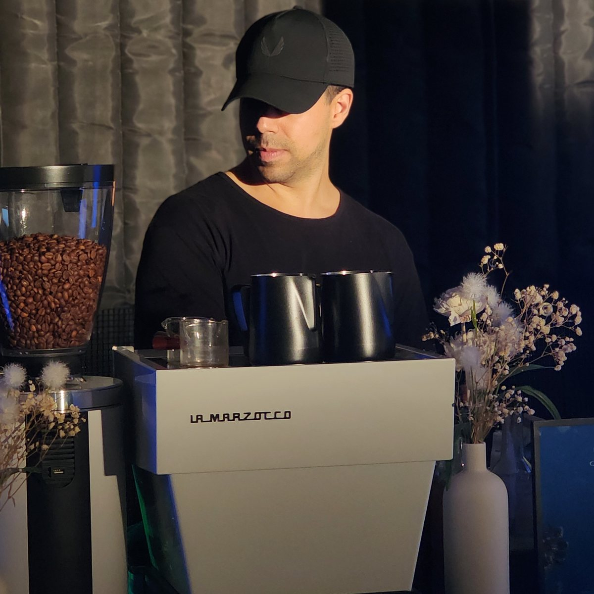
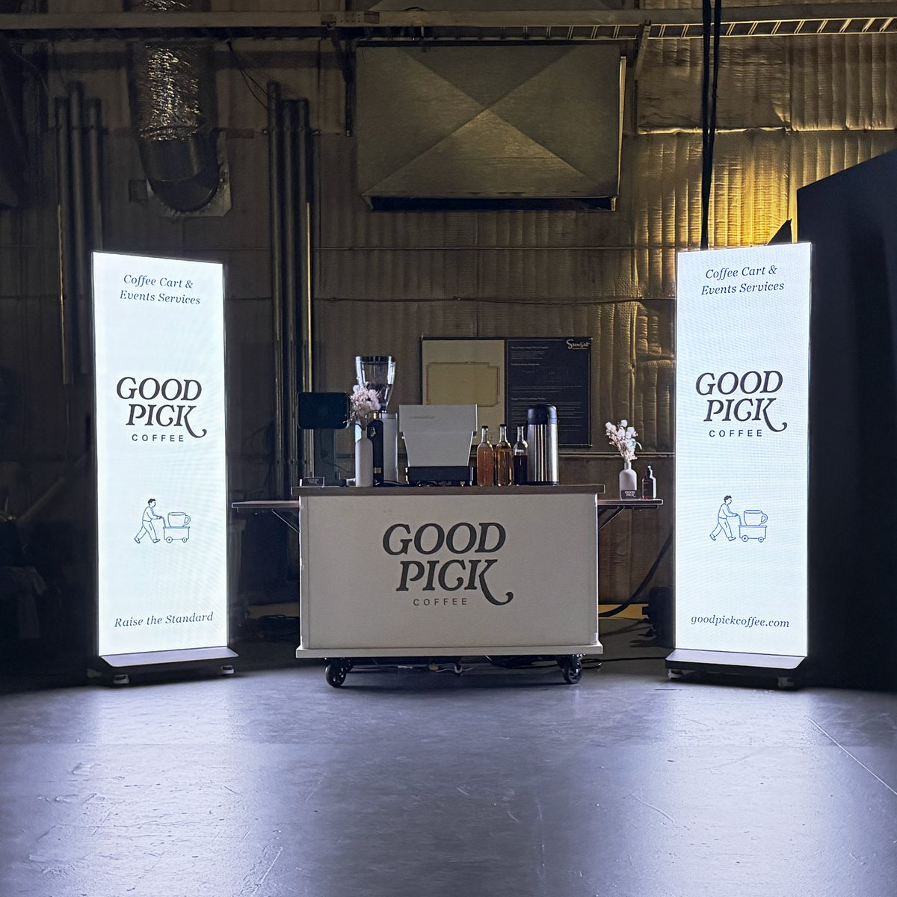
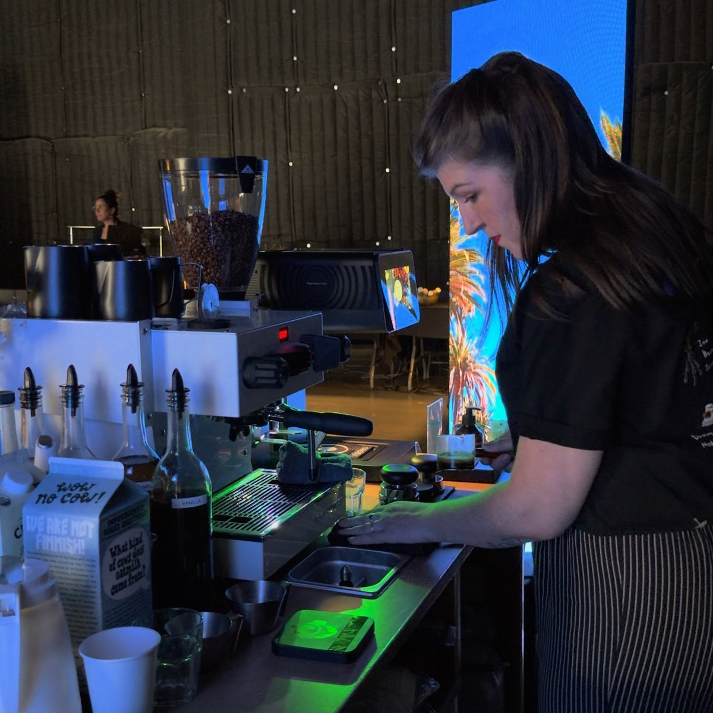
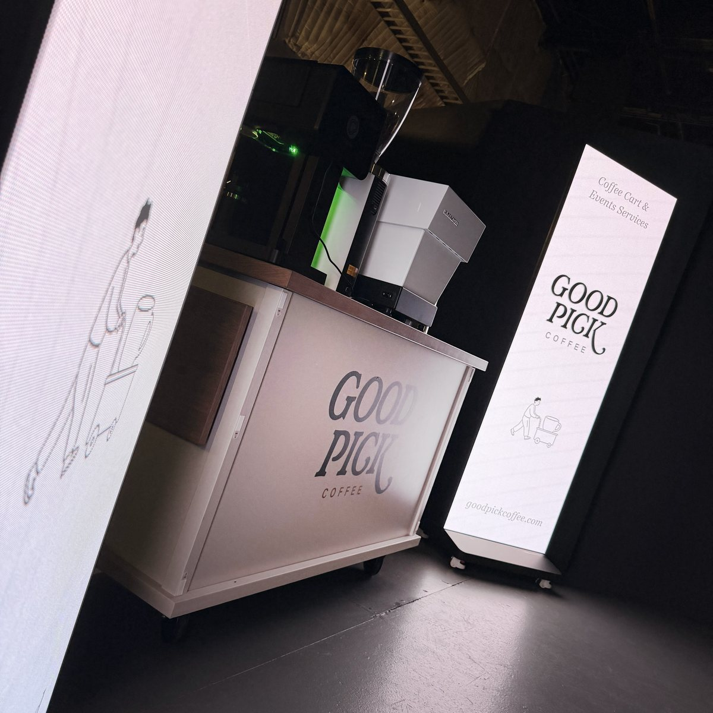
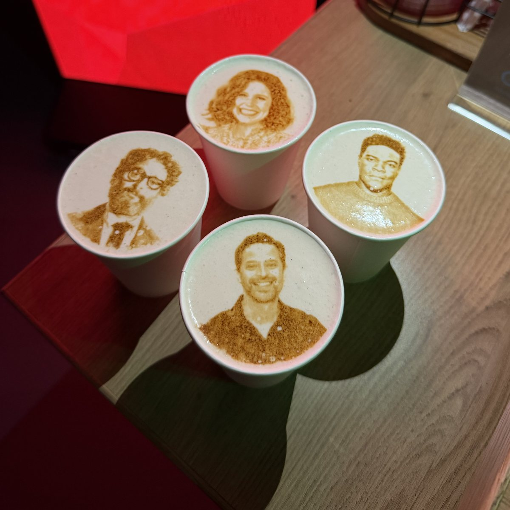
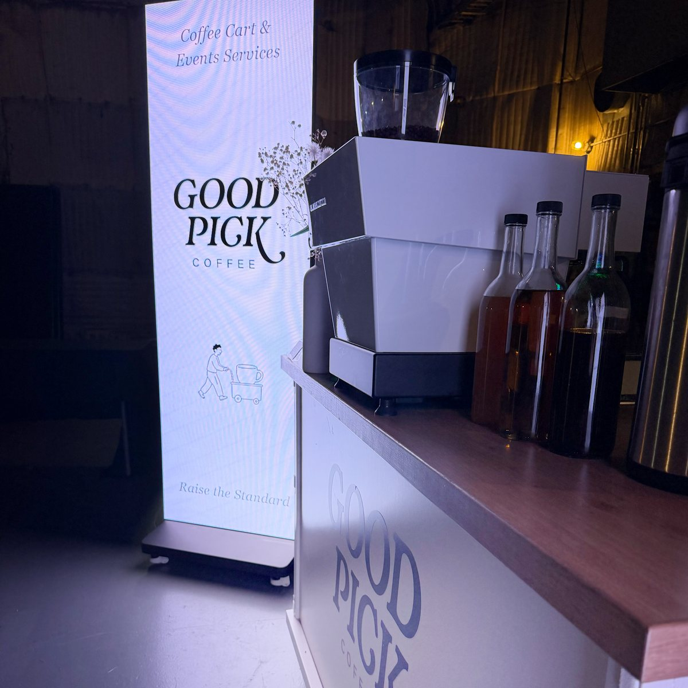
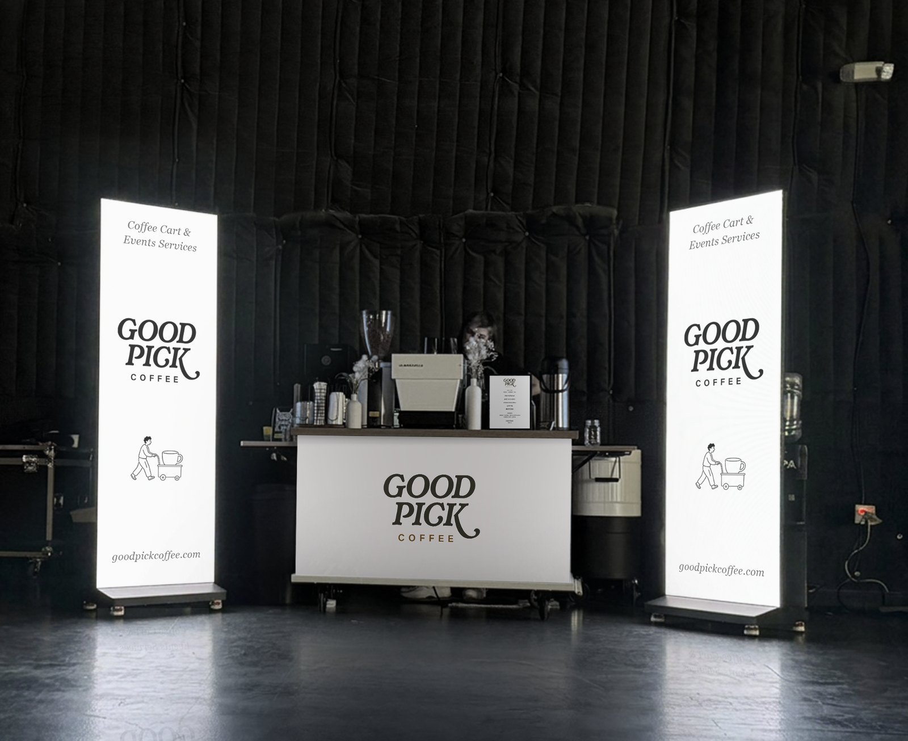

From indie shorts to studio features, Good Pick brings a full espresso and matcha bar to your production set in Los Angeles. We work around your call sheet, not the other way around — book us for a single shoot day or as recurring craft services support for the full run of your film, television, or commercial project.
We coordinate directly with your production coordinator or craft services lead so setup, service, and breakdown never hold up a shot.
Book us for one shoot day, or set up recurring service that runs for the length of your film, TV, or commercial production.
Our baristas move quickly and quietly near base camp or holding, keeping cast and crew fueled without disrupting sound or setups.







Crews run on early calls and long days. Good Pick sets up a mobile coffee cart at base camp or beside the set, with event baristas serving espresso drinks, cold brew, and matcha on your schedule.
Book a single shoot day or recurring service for the length of a production. Tell us your location, call time, and crew size, and we will send a custom quote.
Get a QuoteTell us about your shoot dates, call times, and crew size and we'll put together a production coffee package that fits your schedule.
Date, location, headcount, and the type of event.
Espresso drinks, matcha, cold brew, and seasonal options.
Cart wrap, LED screens, cups, and latte art.
You see the design before anything is printed.
Our event baristas set up, serve, and break down.
Yes — we coordinate directly with your production coordinator or craft services lead to fit our setup, service window, and breakdown around your call times without disrupting the shoot.
Both. We're booked for single shoot days as often as we are for recurring service across multi-day and multi-week film, TV, and commercial productions.
Yes, we regularly schedule around early morning call times, overnight shoots, and other non-standard production hours.
Yes — we provide on-set coffee service for commercial shoots, film productions, and television productions of any size, anywhere in the Los Angeles area.
We position the cart away from active set areas and coordinate timing with your production team.
Yes. We can serve on a set schedule for the length of a shoot. Contact us with your dates for a custom quote.